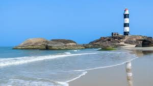
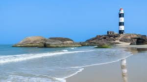

Bagalkot, or Bagalakote, is situated on branch of River Ghataprabha about 481 km (299 mi) northwest of state capital Bangalore, 410 km (255 mi) southwest of Hyderabad, and about 570 km (354 mi) southeast of Mumbai. According to stone inscriptions in the surrounding area, the town's name was formerly Bagadige. According to legend, the town was given to the Bhajantries (musicians) by Ravana, the king of Lanka who ruled this area.
One of the Bijapur kings is said to have presented the town to his daughter as bangle money (a tradition in which the daughter is given money to buy bangles, sarees, gold ornaments from her parents after the marriage).
The place was a noted centre of the Indian independence movement and the Unification movement. Revolutionary Sindhoora Laxmana lived in Kadalimatti and Bilagi mountain ranges.
Belgaum (also and officially known as Belagavi) and also as Belgaon is a city in the Indian state of Karnataka located in its northern part along the Western Ghats. It is the administrative headquarters of the eponymous Belgaum division and Belgaum district. The Government of Karnataka has proposed making Belgaum the second capital of Karnataka, hence a second state administrative building Suvarna Vidhana Soudha was inaugurated on 11 October 2012.
Belgaum has been selected in first phase out of 20 cities, as one of the hundred Indian cities to be developed as a smart city under PM Narendra Modi's flagship Smart Cities Mission. Belgaum is an important source of vegetables, fruits, meat, poultry, fish, mining production, and wood (due to heavy rainfall, rivers and the abundance of water). Trading in North Karnataka is mainly with Goa and Maharashtra along with major cities like Pune and Bangalore. Rich deposits of Bauxite are found in Belgaum district and have led to the creation of the Indian aluminium-producing company Hindalco Industries of the Aditya Birla Group. Uranium deposits have been found at Deshnur, a small village near Bailhongal town.
A 300-acre Special Economic Zone (India's first Private Aerospace SEZ ) is being set up along the Pune-Bangalore National Highway (NH-4) to cater to the precision engineering requirements of the global aerospace, automotive and industrial verticals.


Bellary has an average elevation of 495 metres (1,624 ft) The city stands in the midst of a wide, level plain of black cotton soil. Granite rocks and hills form a prominent feature of Bellari. The city is spread mainly around two hills of granite composition, the Bellary Gudda and the Kumbara Gudda. With cotton being one of the major agricultural crops around Bellary historically, the city has had a thriving cotton processing industry in the form of ginning, spinning and weaving plants.
Hampi, also referred to as the Group of Monuments at Hampi, is a UNESCO World Heritage Site located in east-central Karnataka, India. It became the centre of the Hindu Vijayanagara Empire capital in the 14th century. Chronicles left by Persian and European travellers, particularly the Portuguese, state Hampi was a prosperous, wealthy and grand city near the Tungabhadra River, with numerous temples, farms and trading markets.
"The abode of bygone ruins, rusty colors and fascinating landscape", Hampi is a backpacker's delight.Hampi is as mysterious as the ruins itself - the city is surrounded by boulders of different sizes, and you can climb to the top of them with a little effort to get a stunning view of the entire city and the geography.


Bangalore, officially known as Bengaluru is the capital of the Indian state of Karnataka. It has a population of over ten million.In 1537 CE, Kempe Gowda, a feudal ruler under the Vijayanagara Empire,established a mud fort considered to be the foundation of modern Bengaluru and its oldest areas Or Petes which exist to the present day. Thanks to its altitude, Bangalore enjoys a pleasant and equable climate throughout the year. Tree-lined streets and abundant greenery made it the 'Garden City' of India.
Bengaluru is sometimes referred to as the "Silicon Valley of India" (or "IT capital of India") because of its role as the nation's leading information technology (IT) exporter. Indian technological organisations ISRO, Infosys, Wipro and HAL are headquartered in the city.
The people in the city are warm, hospitable and friendly. Bangalore is generally regarded as a place that most visitors like to chill out in. Not to say that it has nothing for the people interested in history. Along with the modern day pubs, discos and hangouts, one can still see remnants of the older Bangalore. All in all, a lovely city to visit.
Bidar is a hill top city in the north-eastern part of Karnataka state in India. It is the headquarters of the Bidar which borders Maharashtra and Telangana. It is a rapidly urbanising city in the wider Bidar Metropolitan area. The city is well known for its many sites of architectural, historical and religious importance.
Bidar is home for the second biggest Indian Air Force training centre in the country. The IAF Station Bidar is used for advanced jet training of prospective fighter pilots on BAe Hawk aircraft. Bidar city is known for its Bidri handicraft products, and its rich history. Bidar is also considered one of the holiest place for Sikh pilgrimage.
Unlike other places in the region, Bidar is the coldest and wettest place in north Karnataka. For the year 2009-10, Bidar was ranked 22nd among the cleanest cities in India, and 5th cleanest in Karnataka
Bijapur, officially known as Vijayapura, is the district headquarters of Bijapur District of Karnataka state of India. It is also the headquarters for Bijapur Taluka. Bijapur city is well known for its historical monuments of architectural importance built during the rule of the Adil Shahi dynasty. Vijayapura, one of the popular heritage city located in the Karnataka state of India is also one of the top ten populated cities in Karnataka.
The place is an important tourist place in the country, the former capital of the Adilshahi dynasty, situated about 579 km to the north-west of Bangalore. The Gadag-Solapur railway line traverses via this place. The Kalyani Chalukya kings made it a sub-capital according to an inscription of 1073. It is believed that Jain Poet Nagachandra, 12th century, had his residence here. The place had old names like Vijayapura, Vidyapura and Mohamudpura. For nearly 200 years from 1489 to 1686, this was the seat of the Adilshahi Dynasty.
Among the other historical attractions at Bijapur, some notable ones are the Anand Mahal, Jod Gumbaz, Jumma Masjid, Saat Manzil, and Jal Manzil. also among old houses at Bijapur, the most famous is Elavia House ( Nauzer Elavia) which is more than 100 years old.
Chamarajanagar is a town in the southern part of Karnataka, India. Named after Chamaraja Wodeyar IX, the erstwhile king of Mysore, it is located on the interstate highway linking the neighboring states of Tamil Nadu and Kerala.
Chamarajanagar railway station is the southern most rail point in Karnataka. There is a direct train to Tirupati which starts by three in the afternoon and a direct train to Bengaluru in the morning. The nearest airport is Mysore airport and the nearest international airports are in Bengaluru and Coimbatore.
Maaravva or Maaramma is most widely worshiped deity in the town, more than ten temples of Maaravva can be found in the town. Chamarajeshwara Temple and Haralu Kote Anjaneya Temple are the biggest and the oldest temples respectively. Apart from these the town has many temples. As far as other religious beliefs are concerned, the town has more than 15 Mosques ; 5 Churches ; 2 Jain Basadis and 2 Buddha Viharas.
Chikkaballapur is the district headquarters of the newly created Chikkaballapur district in the state of Karnataka, India. It is located within 3 km of Muddenahalli (the birthplace of eminent engineer and statesman Sir Mokshagundam Visvesvarayya). A $400 million Pharmaceutical SEZ is coming up in Chikkaballapur on 325 acres , the first of its kind in India.
The town of Chikkaballapur is approximately 56 km north of Bengaluru (formerly Bangalore), the silicon plateau of India. Chikkaballapur has a high elevation located in the center of the Nandi Hills region."Panchagiri" is a common descriptor of Chikkaballapur as it is surrounded by 5 picturesque hills among which Nandi Hills is the famous one (The five hills are known as Nandi Giri, Chandra Giri, Skandagiri, Brahma Giri, and Hema Giri). The Kalavara Halli hill Kalavaara betta, is becoming famous because of the trekking involved to reach the top of the hill.
The nearby region of Muddenahalli is the birthplace of legendary engineer Sir Mokshagundam Visvesvarayya.Chikkaballapur has the small, pristine Kandavara Lake.Hossur is the birthplace of Dr. Hosur Narasimhaiah, the great educationalist and thinker.S. Gollahalli Village Sri Anjaneya Swami temple is an important place to visit.There are several reputed educational institutions in the region. SJCIT is an engineering institute established in 1986 and imparts degree and graduate education.
Chikmagalur or Chikkamagaluru is a district in the state of Karnataka. Coffee was first cultivated in India in Chikmagalur.The mountains in Chikmagalur which are a part of the Western Ghats are the source of rivers like Tunga and Bhadra. Mullayanagiri, which is the highest peak in Karnataka is located in the district
Chikmagalur is the region where the Hoysala rulers started and spent the early days of their dynasty. Chikmagalur is a wonderful destination to visit with many tourist spots, from pilgrimage sites wildlife tourism destinations to adventure sports destinations.
Chikmagalur have plenty of points that offer breathtaking views of mountains and emerald landscapes .If we translate the meaning of Chikmagalur in English, it says 'Young Daughter's Town'. The fact makes this place even more appealing for visitors, who love to flock into the city, especially during weekends to enjoy its cool and comfortable climate.


The district of Chitradurga of Karnataka is renowned in an international level for its monuments. This place has experienced the life of man from the earliest historic times resulting in the spread of antiquities and monuments throughout the district. These not only reflect the cultural fervour of this region but have become popular tourist spots.
The innumerable monuments built during the reign of all the imperial dynasties reflect the socio-economic life of contemporary people, their cultural achievements and esthetic sense and the bond between the rulers and subjects. the monuments mainly contribute for the understanding of technical skills achieved in the field of architecture and the proper use of resources at various points of time.
This ancient city has an umbrella-shaped lofty hill and sated with rocky hills, valleys and eminent rocks of several shapes. The city is also called as the Kallina Kote and the Stone Fortness. Famous for historical 'Chitradunga Fort', the region is nearly associated with the Mahabharata and the history of the fort lies from the period of Chalukyas empire and known for the myth of Onaka Obawa.


Davanagere District is an administrative district of Karnataka state in India. The city of Davanagere is the district headquarters.The district lies in the central plains of the state with its unique features of having dual cultures of the north and the south of the state.
Being a cotton hub and hence popularly known before as the Manchester of KarnatakaDavangere has been selected as one of the hundred Indian cities to be developed as a smart city under PM Narendra Modi's ambitious flagship Smart Cities Mission.Davanagere is also famous for its "butter dosa" which is famously known as "Davanagere Benne Dose".
Dharwad is an administrative district of the state of Karnataka in southern India and is the cultural headquarters of North Karnataka.The word "Dharwad" means a place of rest on a long journey or a small habitation. For centuries, Dharwad acted as a gateway between the Malenadu region and the plains, and it became a resting place for travelers.
The name is derived from the Sanskrit word 'dwarawata', 'dwara' meaning "door" and 'wata' or 'wada' meaning "town".Hubballi (The Sister City of Dharwad) is an important industrial center, with more than 1,000 small and medium scale industries established.
They include machine tool industries,Cotton Industries, electrical industries, steel furniture industries, food processing, rubber, leather and leather tanning industries.Chandramouleshwara Temple,Bhavanishankar Temple,Siddharoodha Math,Kundgol are some of the places of interest.

Gadag District borders Bagalkot District on the north, Koppal District on the east, Bellary District on the southeast, Haveri District on the southwest, Dharwad District on the west and Belgaum District on the northwest. It features monuments (primarily Jain and Hindu temples) from the Western Chalukya Empire. The word Gadag is a palindrome in both the Kannada and the English languages.
The town has 11th- and 12th-century monuments. The temple of Veera Narayana and the Trikuteshwara complex are sites of religious and historic importance. One of the two main Jain temples is dedicated to Mahavira.The Magadi Bird Sanctuary,created at the Magadi reservoir, is 26 kilometres (16 mi) from Gadag on the Gadag-Bangalore Road, It is known for migratory species such as the bar-headed goose, which feed on fish and agricultural crops.


The small town of Gulbarga also konwn as Kalaburgi is famous for its association with the erstwhile medieval kingdom of Bahamani (1347-1526). It was the capital of the Bahamani rulers from 1347 to 1428. A number of monuments dating from 13th to the 15th century can be seen here. These monuments reflect the architectural skills of the Bahamani rulers.
Gulbarga: The very name is a reference to the city’s legacy of Islamic art. This historic city is a part of the Indian state of Karnataka and boasts of a vibrant heritage. It is a region that is well-known across the country for its numerous historical forts, mausoleums, and other buildings.
A city with lively environment and great monuments and temples around. Based strategic location between Maharashtra and Andhra Pradesh. Good connectivity of rail, road, nearest airport is Hyderabad. Religious place with cross culture of hindu, muslim, maratha, christians, sikhs. Food is finger licking with red hot spiciness, if you are a hot/spicy food lover, you will enjoy eating.
Hassan district was the seat of the Hoysala Empire which at its peak ruled large parts of south India from Belur as its early capital and Halebidu as its later capital during the period 1000 - 1334 CE.The district is named Hassan after the Goddess "Haasanamba", the goddess and presiding deity of the town.
The Vijayanagar kings patronised Chennakesava of Belur as their family deity. It was also ruled by Adilshahis of Bijapur and Mughal Empire after decline of the VijayanagarReserve forests were established in the 19th century, and covered an area of 185 square miles in the district.
Chennakesava Temple, Belur,Hoysaleswara Temple, Halebidu,Gommateshwara Statue, Shravanabelagola,Hasanamba Temple, Hassan,Jenukallu Siddeshwara Temple, Arsikere are some of the important temples loacted in Hassan.
Haveri is a district in the state of Karnataka, India with the potential to become a tourist hubHaveri District is exactly in the centre of Karnataka, being equidistant from Bidar in the far north and Kollegal in the far south.Haveri is the administrative and political headquarters of the district, whereas Ranebennur in the south is a business hub.
Dargah of Irshad Ali Baba, Haveri.Ranebennur Wildlife Sanctuary in Haveri District, Siddhesvara Temple Haveri, Galageshwara Temple at Galaganatha, Temples at Kaginele (Kanakadasa), Hole-Anveri Temple, Kadaramandalagi Anjaneyaswami Temple, Mylara Lingeshwara Temple at Mylara near Guttala, Utsav Rock Garden - Contemporary Sculptural Garden are some of the tourist places in Haveri.
Kodagu also known as Madikeri is a quaint hill town in Karnataka with vast coffee plantations, lush forests and misty hills, all culminating into a breathtaking view.This hill station is a perfect weekend getaway for those looking for a picturesque and relaxing holiday ornamented by awe-inspiring sceneries and splendid views made up of abundant and beautiful vegetation all across.
There is no pollution, no noises to hurt your ears and the cool breeze that accompanies you throughout makes your trip memorable. Madikeri is famous for its infinite fields of tea and coffee plantations that leave a soothing aroma in the air.A great mix of natural, historical as well as religious attractions can be seen here, thus catering to all kind of tourists and making it a complete tourist experience.
The fabulous climate and stunning location of Madikeri makes it one of the most favorite destinations of British, who took over this place for over 100 years and called it as 'Scotland of India.' Some people even call it 'Kashmir of the South India', because of its exquisite beauty and quiet landscapes.
Kolar district is a district in the state of Karnataka, India. Kolar is the district headquarters. Due to the discovery of the Kolar Gold Fields, the district has become known as the "Golden Land" of India.Kolar, formerly known as Kolahala, Kuvalala and Kolala, was called Kolahalapura during the Middle Ages.
In Kannada, kolahahapura means "violent city" and it was the battlefield for the warring Chalukyas in the north and the Cholas in the south.Kolar Gold Fields (KGF) has an Anglo-Indian population. Kolaramma temple, Someshwara temple, Kotilingeshwara Temple,Kolar Gold Mines are some of the places of interest here.
Koppal district is an administrative district in the state of Karnataka in India. In the past Koppal was referred to as 'Kopana Nagara'. Hampi, a World heritage center, covers some areas of Koppal District. It is situated approximately 38 km away. Anegundi, is also a famous travel destination.There are two Ashokan inscriptions at Palkigundu and Gavimatha.
It was the capital of a branch of Shilaharas under the Chalukya's of Kalyan. The major tourist attraction in Koppal is The Mahadeva Temple. In Karnataka their most famous temples are the Kashivishvanatha temple and the Jain Narayana temple at Pattadakal, both of which are UNESCO World Heritage sites.
Mandya District is an administrative district of Karnataka, India. The district is bordered on the south by Mysore District, on the west by Hassan District, on the north by Tumkur District and on the east by Ramanagar district. The district Mandya was carved out of larger Mysore district in the year 1939.
Mandya District has five rivers: Kaveri River and four tributaries main Hemavathi, Shimsha, Lokapavani, Veeravaishnavi.Mandya is famous for sugarcaneThe magnificent KRS dam was built by Krishna Raja Wadiyar IV and M. Visvesvaraya in Mandya. There are a lot of historical places of importance in Mandya. In 2016, Archaeological Survey of India (ASI) excavated another 13 ft (4.0 m) statue of Bahubali, a much revered figure among Jains.


Mangalore, officially known as Mangaluru, is the chief port city of the Indian state of Karnataka. It is the only city in Karnataka to have all modes of transport—air, road, rail and sea—along with five other major cities in India. It is known as the "Gateway of Karnataka". Mangalore has a tropical monsoon climate, and is under the influence of the southwest monsoon.
Many classical dance forms and folk art are practised in the city. Yakshagana, a night-long dance and drama performance, is held in Mangalore,[142] while Pilivesha (literally, tiger dance), a folk dance unique to the city, is performed during Dasara and Krishna Janmashtami.Bhuta Kola (spirit worship), is usually performed by the Tuluva community at night.
Alternating between relaxed coastal town and hectic nightmare, Mangaluru has a Jekyll-and-Hyde thing going, but it’s a useful gateway for the Konkan coast and the inland Kodagu region. It has an appealing off-the-beaten-path feel, and the spicy seafood dishes are sensational.


Mysore officially Mysuru, is a city in the southern part of the state of Karnataka, India.It served as the capital city of the Kingdom of Mysore for nearly six centuries. The Kingdom was ruled by the Wadiyar dynasty.The cultural ambiance and achievements of Mysore earned it the sobriquet "Cultural Capital of Karnataka".
Mysore is noted for its heritage structures and palaces, including the Mysore Palace, and for the festivities that take place during the Dasara festival when the city receives a large number of tourists from around the world.It lends its name to various art forms and culture, such as Mysore Dasara, Mysore Painting the sweet dish Mysore Pak,brands such as Mysore Sandal Soap, Mysore Ink and styles and cosmetics such as Mysore Peta (a traditional silk turban) and the Mysore Silk sarees.
There's an old world charm about the city that reaches out and leaves no one untouched.Today, Mysore is a vibrant city teeming with tourists and visitors. It is known the world over for its exotic sandalwood and rich silks. Its grand and imposing palaces, majestic temples, gardens leave an ever-lasting impression on the visitor.
Raichur District is an administrative district in the Indian state of Karnataka. It is located in the northeast part of the state The recorded history of the district is traced to as far back as the third century B.C.
The fact that three minor rock edicts of Ashoka are found in this district one at Maski in the Lingasugur taluk and the other two near Koppal, prove that this area was included in the dominions of the great Mauryan king Ashoka (273 - 236 B.C.).Among the historical attractions in the district is the Raichur Fort, built in 1294.
Also notable is the nearby town of Anegundi, which has a number of monuments from the Vijayanagara empire, including the Ranganatha temple, Pampa Lake and Kamal Mahal. Hatti Gold Mines This mine is probably one of the most ancient metal mines in the world, dating to the Pre-Ashokan period. It is the only functioning Gold mine in India.

Ramanagara district was carved out of the erstwhile Bengaluru Rural district on 23 August 2007, comprising Ramanagara, Channapatna, Kanakapura and Magadi taluks.This region has several tall granitic hills which are famous for many short rock climbsAnother well-known hill is Ramadevarabetta.
Along with Savandurga this was one of the shooting locations for David Lean's A Passage to India. Small door like grottoes was made in the rock to resemble caves. It was also in this region that the path-breaking Hindi movie, Sholay, was shot. Bilikal Rangaswamy Betta is a popular tourist spot in the district.
The region is covered in scrub forest and is home to threatened bird species such as the yellow-throated bulbul and long-billed vultures. The hill is today one of the few locations in south India where long-billed vultures nest. The region is also home to numerous sloth bears.


Shivamogga, also known as Shimoga,is a city and the district headquarters of Shimoga in the central part of the state of Karnataka, India. The city lies on the banks of the Tunga River. Being the gateway for the hilly region of the Western Ghats, the city is popularly nicknamed as "Gateway of Malnad". It also is the home for the beautiful Jog Falls which is the second highest waterfalls in India.
With nature in its full bloom, the town of Shimoga has been a home to several great dynasties and kingdoms. Steeped in rich heritage and culture, this main city of Shimoga District derives its name from the words 'Shiv-Mukha' implying 'Face of Lord Shiva'.Packed with several marvels of nature in form of picturesque landscape, gorgeous waterfalls, mystical temples and lush green surroundings, its raw beauty will leave you absolutely enchanted.
With four rivers namely Sharavathi, Kumudavath, Tungabhadra and Varada making their way into the city, gurgling and bubbling adds mystical charm to the region. Pleasant weather, beautiful rolling hills, profusion of areca nuts and endless list of attractions has made this place a must for enthusiastic vacation makers.

Tumakuru District is an administrative district in the state of Karnataka in India. It was formerly the part of old Mysuru State. It was formed in 1832 during the days of British commissioner of Mysuru Sir Mark Cubbon . Tumakuru District is the second largest district in the state of Karnataka after Belagavi.
The slopes of the Devarayanadurga hills are clothed with forests. Wildlife such as leopards,Indian Hyena ,bears and wild boar have been recorded here. Although, tigers have been recorded from these forests as late as the 1950s.Tumkur is a good study center from primary education to higher education.
It has its own university. Within this town, there are seven technology institutions, two medical institutions and one dental institution.
 

Just inland from the coast, the holy town of Udupi is home to an ancient Hindu temple that's an important place of pilgrimage, as well as several monasteries.Udupi also happens to be a popular tourist destination with a number of famous locations and beaches.It has some of the most beautiful and serene beaches in whole of Karnataka
There are also many adventure sports you can find like Scuba diving, Trekking, Sea sports etc,. Udupi is well known for its religious fervour and vividity of diverse cultural heritage.It is best known as the seat of Madhwa renaissance
Uttara Kannada/ North Canara is a district in the Indian state of Karnataka. It is bordered by the state of Goa and Belagavi District to the north, Dharwad District and Haveri District to the east, Shivamogga District and Udupi District to the south, and the Arabian Sea to the west. The city of Karwar is the administrative headquarters of the district. Bhatkal, Sirsi and Dandeli are other major towns in the district.
Uttara Kannada was the home of the Kadamba kingdom from the 350 to 525. They ruled from Banavasi. After the subjugation of the Kadambas by the Chalukyas, the district came under successive rule of empires like Chalukyas, Rashtrakutas, Hoysalas and Vijayanagar empire. Famous Moroccan traveler Ibn Battuta is said to have stayed for a time in the district under the protection of Nawayath Sultan Jamal Al-Din at Hunnur.Cintacora, also known as Chitrakul (Chittakula) and Sindpur, was known to the Portuguese as a very old port.
Yakshagana is a classical dance drama popular in the state of Karnataka in India mostly popular in the districts of Uttara Kannada.Uttara Kannada is famous for a variety of seafood delicacies. Fish curry and rice is the staple diet of the locals. Cashews and coconut are also extensively used. Karwar is one of the the main port cities of India.
Yadgir District is one of the 30 districts of Karnataka state in southern India. This district was carved out from the erstwhile Gulbarga district as the 30th district of Karnataka on 10 April 2010.Yadgir, popularly called as "Yadavagiri" by the local people, was once a capital of the Yadava Kingdom.
It has a rich historical and cultural traditions. Yadavas, chose Yadgir to be their capital The Dhab Dabi waterfall is about 5 km from Gurmitkal and about 30 km from Yadgir. 'Chintanalli' is famous for the temple of Lord 'Gavi Siddeshwara' where the lord resides in a cave with natural water flowing over the temple and falling at the entrance; those entering the temple must walk through this waterfall.
There is also a bridge constructed across the Bheema river, which is some 4 km from the city well connected by road. Sleeping Buddha in Shahapur taluk consists of four hills.